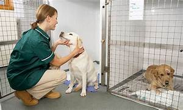
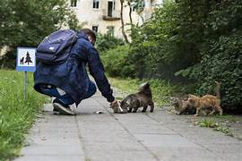

Equipo de veterinarios
En la fundación contamos con doctores veterinarios, estos simpre estan las 24hs en contactos con nuestros animalitos para mayor seguridad ante su cuidado .
Hay un grupo que está encargado de los animalitos recien llegados, esos que estan en mal estado y necesitan una revisación de suma ugencia. Y por lo tango el otro grupo se encarga del cuidado habitual.
Como toda vocación tiene sus pro y sus contras, hay veces que damos la bienvenida a nuevas criaturas del amor y hay otras veces que hay que despedirlos, con mucho dolor pero siempre hay que tenerlos bien presentes.
Todo el equipo esta preparado para todo lo que vanga en el camino.

Tránsito del amor
Tambien contamos con transito domestico, esto qiere decir que cada persona que se ofrezca a querer cuidarlos por un tiempo hasta que aparezca una familia que los puedan adoptar, lo pueden hacers.
Por otra parte es una forma de ayudar a la fundación, ya que, en la misma contamos con muchos animales y a veces no podemos refugiar a todos juntos.
Es por eso que cada mes una persona se ofrece hacer este "servicio"